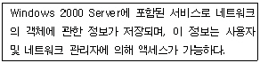
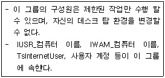
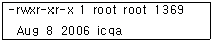

네트워크관리사-2급 (2006-10-15 기출문제)
1과목: TCP/IP
1. Windows 2000 Server에서 동적 호스트 구성(DHCP), DNS 등의 서버 주소를 포함하여, 서브넷 마스크, 기본 게이트웨이 등 TCP/IP 구성 파라미터를 확인할 수 있는 명령어는?
- Ifconfig
- Ipconfig
- Netstat
- Ping
(정답률: 76%)

2. IP Address Class중에서 소형 망에 적합하며, 가장 적은 수의 호스트를 가질 수 있는 IP Address Class는?
- A Class
- B Class
- C Class
- D Class
(정답률: 66%)
3. 다음 중 인터네트워킹에 사용되는 장비로 옳지 않은 것은?
- DSU
- Hub
- ASU
- Router
(정답률: 58%)
4. 서브넷의 기능에 대한 설명으로 가장 옳지 않은 것은?
- 서브넷은 단일 네트워크 ID로 부터 파생된 IP Address를 사용하는 TCP/IP 환경의 물리적 세그먼트를 가리킨다.
- 한정된 IP Address를 효율적으로 사용 할 수 있다.
- 네트워크 ID를 두 부분으로 나누어 각 세그먼트에 대해 고유한 서브넷 ID를 생성한다.
- 서브넷 마스크(Subnet Mask)는 IP Address와 결합하여 사용자의 컴퓨터가 속한 네트워크를 식별한다.
(정답률: 42%)
5. 소규모 네트워크에 적합하며, 라우팅을 지원하지 않아 대규모의 네트워크나 WAN에 적합하지 않은 프로토콜은?
- NetBEUI
- TCP/IP
- NWLink
- DLC
(정답률: 67%)
6. Loopback 주소를 나타내는 특수 IP Address는?
- 10.x.x.x
- 127.x.x.x
- 0.0.0.0
- 255.255.255.255
(정답률: 90%)
7. 다음 중 IP 프로토콜의 기능으로 옳지 않은 것은?
- 하나의 사용자 데이터가 너무 큰 경우는 여러 개의 IP 패킷으로 나누어져서 전송될 수 있다.
- 일정한 시간 이내에 목적지에 도착하지 못한 패킷은 망 내에서 제거 된다.
- 데이터를 전송할 때, 사용자가 필요로 하는 QoS(서비스 품질)에 관련된 사항을 기술할 수 있다.
- 수신측에서는 도착한 IP 패킷의 에러 여부를 검사하며, 에러가 발생한 경우 재전송을 통하여 에러를 회복한다.
(정답률: 59%)
8. 다음 중 TCP 헤더의 플래그 비트로 옳지 않은 것은?
- URG
- UTC
- ACK
- RST
(정답률: 47%)
9. TCP 프로토콜의 기능으로 옳지 않은 것은?
- 오류 검출 및 재전송
- 흐름 제어
- 혼잡 제어
- 경로 제어
(정답률: 50%)
10. 다음 중 ARP와 RARP에 대한 설명으로 옳지 않은 것은?
- ARP와 RARP는 전송 계층에서 동작하며, 인터넷 주소와 물리적 하드웨어 주소를 변환하는데 관여한다.
- ARP는 IP 데이터 그램을 정확한 목적지 호스트로 보내기 위해 IP에 의해 보조적으로 사용되는 프로토콜이다.
- RARP는 로컬 디스크가 없는 네트워크상에 연결된 시스템에 사용된다.
- RARP는 MAC 주소를 알고 있는 상태에서 그 MAC 주소에 대한 IP Address를 알아낼 때 사용한다.
(정답률: 50%)
11. 다음 중 IGMP(Internet Group Management Protocol)에 대한 설명으로 올바른 것은?
- 대칭 프로토콜이다.
- TTL(Time to Live)이 제공되지 않는다.
- 데이터의 멀티 캐스팅을 위해 개발된 프로토콜이다.
- 최초의 리포트를 잃어버린 후 ICMP를 갱신하지 않는다.
(정답률: 77%)
12. 단말기 사용자가 원격에 있는 호스트에 접속하여 데이터를 액세스 및 수정 할 수 있도록 해 주는 프로토콜은?
- FTP
- Telnet
- ARP
- WWW
(정답률: 84%)
13. 원격에 있는 호스트 접속 시 암호화된 패스워드를 이용하여 보다 안전하게 접속할 수 있도록 rlogin과 같은 프로토콜을 보완하여 만든 프로토콜은?
- SSH
- SNMP
- SSL
- Telnet
(정답률: 77%)
14. HTTP(Hyper Text Transfer Protocol)에 대한 설명으로 가장 옳지 않은 것은?
- 일반적으로 파일 전송 프로토콜로 사용된다.
- 적은 부하로 여러 멀티미디어 정보를 다룰 수 있다.
- WWW 상에서 클라이언트와 서버간의 TCP/IP 네트워크 통신 규약이다.
- Request와 Reply의 간단한 구조로 다양한 문서를 전송할 수 있다.
(정답률: 74%)
15. Anonymous FTP에 대한 설명으로 옳지 않은 것은?
- 일반적으로 80번 포트를 사용하여 상호 통신한다.
- Internet의 많은 컴퓨터들이 Anonymous FTP를 사용하여 문서, S/W 등의 정보를 제공한다.
- 상대방 측 컴퓨터의 계정이 없어도 파일을 송수신 할 수 있다.
- "anonymous" 계정으로 접속한다.
(정답률: 77%)
16. FTP 서비스의 명령어에 대해 옳지 않은 것은?
- Exit : FTP 서비스 종료 명령
- Hash : 전송 상태 표시 명령
- Open : 디렉터리 열기 명령
- Connect : FTP 서버 접속 명령
(정답률: 38%)
17. TCP/IP의 망 관리에 사용되는 프로토콜은?
- Internet Gateway Protocol
- Routing Information Protocol
- Address Resolution Protocol
- Simple Network Management Protocol
(정답률: 71%)
2과목: 네트워크 일반
18. 메시지 교환망에 대한 설명 중 옳지 않은 것은?
- 비연결형 망으로 연결 설정이 필요 없다.
- 축적 후 전달(Store and Forward) 방식이라고도 한다.
- 전자 우편 시스템에서 사용된다.
- 실시간 통신에 적합하다.
(정답률: 40%)
19. 전이중 방식에서 사용할 수 없는 프로토콜은?
- BSC
- SDLC
- HDLC
- DDCMP
(정답률: 40%)
20. 다음 에러제어 기법 중 자동 재전송 기법으로 옳지 않은 것은?
- Stop and Wait ARQ
- Go-Back N ARQ
- 전진에러 수정(FEC)
- Selective ARQ
(정답률: 70%)
21. 방송망을 구성하는 형태로 옳지 않은 것은?
- 패킷 무선 망(Packet Radio Network)
- 위성 망(Satellite Network)
- 지역 망(Local Network)
- 개인 망(Personal Network)
(정답률: 74%)
22. 데이터 전송 전에 목적지까지의 경로를 설정 한 후 전송 데이터를 정해진 단위별로 전송하되, 규정된 시간 내에 전송데이터가 없으면 현재 설정된 경로를 해제하는 교환방식은?
- 회선교환 방식
- 데이터그램 방식
- 가상회선교환 방식
- 메시지교환 방식
(정답률: 51%)
23. OSI 7 Layer 중 응용 계층(Application Layer)에서 통신을 수행하는 다양한 정보의 표현 형식을 공통의 전송형식으로 변환하고 암호화 및 압축 등의 기능을 수행하는 계층은?
- 세션 계층
- 네트워크 계층
- 트랜스포트 계층
- 프리젠테이션 계층
(정답률: 68%)
24. 네트워크상에서 한 장치로부터 다른 곳으로 전송되는 정보의 단위는?
- 홉(Hop)
- 노드(Node)
- 토큰(Token)
- 패킷(Packet)
(정답률: 75%)
25. 소규모의 지역이나 한 개의 빌딩에 가장 적합한 네트워크는?
- LAN
- MAN
- VAN
- WAN
(정답률: 85%)
26. 통신을 원하는 두 실체(Entity) 간에 무엇을, 어떻게 언제 통신할 것인가에 대해 서로 약속한 일련의 절차나 규범의 집합은?
- Program
- Process
- Interface
- Protocol
(정답률: 88%)
27. SONET/SDH에 관한 설명으로 옳지 않는 것은?
- 하나의 클럭이 전체 네트워크간의 전송이나 장비의 타이밍을 위해 사용된다.
- 전송기법이 아니고, 다중화 된 교환기법이다.
- 호환성 없는 종속시스템에서 오는 신호를 전송할 수 있는 기법을 포함한다.
- 각각 다른 광섬유 전송시스템 장비의 표준화를 위한 권고안을 따른다.
(정답률: 44%)
3과목: NOS
28. 웹 브라우저에서 인터넷과 인트라넷을 경유한 프린팅을 가능하게 해주는 프로토콜은?
- Internet Printing Protocol
- Printer Request
- LDAP
- Remote Printing
(정답률: 69%)
29. 웹 사이트를 생성할 경우, 웹 사이트 만들기 마법사 대화상자에서 디폴트로 설정된 TCP 포트 번호는?
- 80
- 77
- 17
- 30
(정답률: 83%)
30. Windows 2000 Server에서 IIS 웹 서버의 설정 중 하루에 평균적으로 방문하는 사용자 수를 설정하기 위해 사용하는 탭은?
- 성능 탭
- 문서 탭
- 웹 사이트 탭
- 홈 디렉터리 탭
(정답률: 62%)
31. Windows 2000 Server에서 DNS(Domain Name System) 서버를 처음 설치하면서 가장 먼저 만들어야 하는 데이터베이스 레코드는?
- CNAME
- HINFO(Host Information)
- PTR(Pointer)
- SOA(Start Of Authority)
(정답률: 65%)
32. 특정 IP나 도메인 이름에 대해 접속을 거부할 수 있도록 설정할 경우, FTP 서버의 등록정보에서 선택한 탭은?
- 보안 계정 탭
- 디렉터리 보안 탭
- FTP 사이트 탭
- 홈 디렉터리 탭
(정답률: 45%)
33. Windows 2000 Server에서 DNS 데이터베이스 레코드 유형 중 호스트 이름을 주소로 매핑하는 리소스 레코드는?
- NS(Name Server)
- MX(Mail Exchanger)
- CNAME
- A
(정답률: 45%)
34. 이 서비스는 서버관리자들에게 유용하며, 흩어져 있는 여러 대의 서버를 관리 할 때 직접 그 서버에 가보지 않고도 관리가 용이하다. 또한 하드웨어 사양이 낮을 경우에도 효율적인 비용으로 사용할 수 있는 이 서비스는?
- 클라이언트 서비스
- 터미널 서비스
- 서버 응용 서비스
- DNS 서비스
(정답률: 61%)
35. 다음에서 설명하고 있는 것은?

- Internet Information Server
- Domain Name Server
- Dynamic Host Configuration Protocol
- Active Directory
(정답률: 56%)
36. Windows 2000 Server에서 그룹의 권한에 대한 설명 중 옳지 않은 것은?
- Users - 포함된 사용자들에게 제한된 권한을 제공
- Administrators - 시스템에 대한 전체적인 권한을 가짐
- Guests - 부여된 권한을 수행하거나 허가된 자원에 접근
- Replicator - 그룹 멤버들에게 관리 업무를 할 수 있는 제한적 권한을 부여
(정답률: 60%)
37. Windows 2000 Server에서 원격 설치 서비스를 구성하기 위하여 원격설치서버 상에 구현이 되어 있어야 하는 네트워크 서비스로 가장 옳지 않은 것은?
- DNS
- DHCP
- Active Directory
- SMTP
(정답률: 59%)
38. Windows 2000 Server의 내장 도메인 로컬 그룹의 종류 중 다음에서 설명하는 그룹은?

- Guests
- Users
- Replicator
- Account Operators
(정답률: 56%)
39. DHCP로부터 새로운 IP Address를 부여받기 위해 사용되는 명령어 옵션은?
- ipconfig /renew
- ipconfig /release
- ipconfig /flushdns
- ipconfig /setclassid
(정답률: 67%)
40. Windows 2000 Server에서 백업에는 Normal, Incremental, Copy, Differential 백업이 있다. 이들의 설명으로 가장 올바른 것은?
- Normal Backup - 선택한 모든 폴더와 파일들을 백업하고, 백업되었다는 표시는 하지 않는다.
- Incremental Backup - 이전의 백업 이후에 변경된 파일이나 폴더를 백업하고, 백업되었다는 표시를 한다.
- Copy - 선택한 모든 폴더와 파일들을 백업한 후에 백업이 되었다는 표시를 한다.
- Differential Backup - 하루 동안 변경된 폴더와 파일들을 백업하고, 백업되었다는 표시를 한다.
(정답률: 50%)
41. Windows 2000 Server에서 NTFS 파일 시스템에 대한 설명으로 옳지 않은 것은?
- FAT, HPFS 파일 시스템보다 더 큰 파일과 파티션 사이즈를 지원한다.
- 파일과 디렉터리 단위의 보안을 설정할 수 있다.
- 파일과 디렉터리의 압축을 지원하고 POSIX 요구 사항을 해결한다.
- NTFS 파일 시스템은 FAT 또는 FAT32로 변환 할 수 있다.
(정답률: 63%)
42. 다음 중 사용자에 대한 패스워드의 만료기간 및 시간 정보를 변경하는 Linux 명령어는?
- chage
- chgrp
- chmod
- uname
(정답률: 71%)
43. Linux를 설치하고 부팅 하였더니 “li” 메시지만 나오고 시스템이 멈추었다. 이때 LILO를 삭제하는 방법은?
- 파티션을 제거한다.
- fdisk /mbr 명령어를 사용하여 부트 레코드를 제거한다.
- format 명령어를 사용하여 하드디스크를 포맷한다.
- del 명령어로 ‘lilo’를 삭제한다.
(정답률: 58%)
44. Redhat Linux 시스템에 ProFTPd를 설치하였다. FTP 접속을 허락하지 않는 사용자에 대한 목록이 있는 파일 이름은?
- ftpusers
- proftpd.conf
- hosts.allow
- in.proftpd
(정답률: 30%)
45. Linux 시스템의 “ls -l" 명령어를 이용한 출력된 결과이다. 옳지 않은 것은?

- 소유자 UID는 root 이다.
- 소유자 GID는 root 이다.
- 소유자는 모든 권한, 나머지 소유자들은 읽고, 실행 가능하도록 설정되었다.
- icqa는 디렉터리를 의미하며 하위 디렉터리의 개수는 하나이다.
(정답률: 70%)
4과목: 네트워크 운용기기
46. NIC(Network Interface Card)를 설치하는데 있어 고려사항으로 가장 옳지 않은 것은?
- NIC를 슬롯에 설치할 때는 슬롯과 NIC 사이에 유격이 발생하지 않도록 견고하게 장착한다.
- NIC 설치 후 PnP 기능이 없는 NIC일 경우 NIC의 인터럽트 번호와 I/O 포트 어드레스를 확인한다.
- NIC에 대한 드라이버는 H/W 수준의 조작을 가하는 부분이므로 호스트에 설치된 운영체제와는 특별한 관계가 없다.
- 운영체제 내에서 NIC 자원에 대한 설정과 IP Address, Gateway 주소, DNS 주소 등을 설정한다.
(정답률: 73%)
47. 무선랜(Wireless LAN)에 대한 설명으로 가장 옳지 않은 것은?
- 유선랜에 비하여 일정거리 내에서 이동성에 대한 자유로움이 보장된다.
- 무선랜은 액세스 포인트(AP)와 무선단말기로 구성된다.
- 무선랜은 주파수, 속도 및 통신방식에 따라 IEEE 802.11a/b/g 등으로 정의 되어있다.
- 동일한 액세스 포인트(AP)를 사용할 경우 주변 환경에 의한 전송속도 영향은 없다.
(정답률: 76%)
48. 라우터에 대한 설명 중 옳지 않은 것은?
- TCP/IP 트래픽을 Routing 하도록 구성할 수 있다.
- 네트워크를 분리하는데 사용할 수 있다.
- 목적지 주소를 보고 그 목적지까지의 최적의 경로를 설정해 준다.
- 서로 다른 프로토콜이나 운영체제를 사용하는 노드가 있을 경우 상호 연결시켜 준다.
(정답률: 49%)
49. 브리지(Bridge)의 특징에 대한 설명으로 가장 옳지 않은 것은?
- 데이터 링크 계층에서 동작한다.
- 브리지에 라우터 기능이 결합되어 하나의 제품으로 나오는 경우도 있는데, 이것을 브라우터(Brouter)라고 부른다.
- 브로드캐스트와 같은 불필요한 트래픽을 줄여준다.
- 서로 다른 기종간의 네트워크를 연결하기 쉽다.
(정답률: 48%)
50. 케이블에 대한 설명 중 올바른 것은?
- UTP : 일반적으로 RJ-45 커넥터를 사용한다.
- Thin Cable : 10Base2라고 불리며, 최대 전송 거리는 2Km이다.
- Thick Cable : 10Base5라고 불리며, 최대 전송 거리는 10Km이다.
- Fiber-Optic : 가장 빠른 전송매체이나 보안성이 떨어진다.
(정답률: 55%)